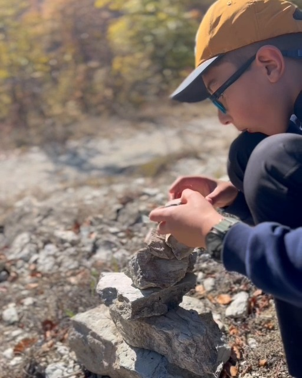

Днес ви отвеждаме на едно красиво място, особено впечатляващо през есента – Ждрелото на река Ерма край Трън.
Златната есен тук има свой собствен чар. Обагрените в жълто, оранжево и червено дървета, скалните форми и шумът на реката създават впечатляваща гледка и превръщат разходката в истинско удоволствие.

Още в началото на маршрута има удобен паркинг, който към момента на посещението ни беше безплатен. Непосредствено до него се намира красива поляна край реката. Има беседки и места за барбекю, а наблизо ще откриете кафе и място за хапване. Чудесно място за почивка, обяд или по-дълъг престой сред природата.
Екопътеката е кръгова – започва и завършва на едно и също място. По пътя ни очакват впечатляващи скални форми, горски участъци, мостчета и тунели. Река Ерма преминава между високите скали и разкрива различни гледки, които си заслужава да видим отблизо.


За малките откриватели маршрутът предлага много поводи за любопитство – да преминат по мостчета, да надникнат в тунела, да наблюдават реката и да откриват интересни форми и цветове по пътя.


За да разгледате всички снимки, натиснете тук.
Ако търсите идея за есенна семейна разходка, Ждрелото на река Ерма определено заслужава място в списъка ви!
📍 Знаете ли, че? Ждрелото на река Ерма е част от Стоте национални туристически обекта на България.